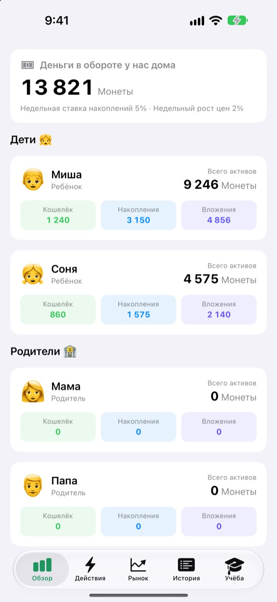
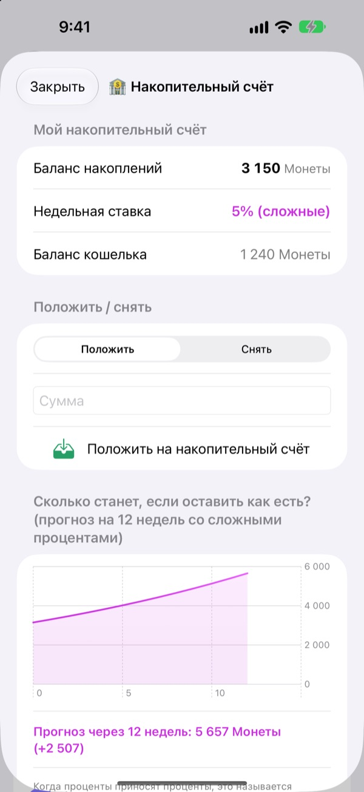
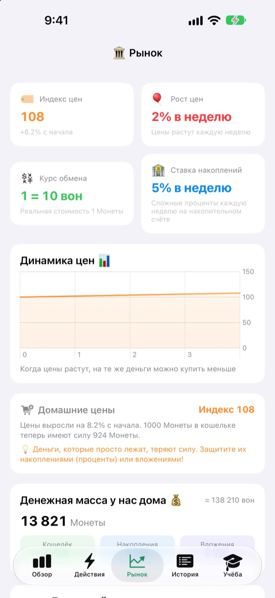
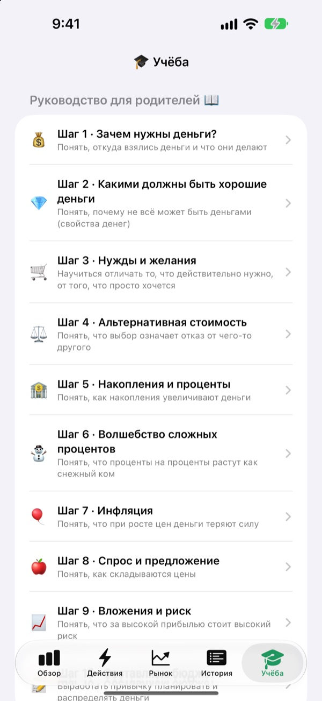

День карманных денег —
урок о деньгах
Вы — центральный банк семьи, дети — его клиенты. Они получают карманные деньги в вашей собственной валюте, покупают вкусняшки, видят, как на накопления капают проценты, и переживают взлёты и падения учебного фонда.
Все функции бесплатны. Настоящие деньги не участвуют.

Где бы вы держали 1 000 монет?
Одни и те же 1 000 монет лежат в кошельке, на накопительном счёте и в трёх фондах. Проматывайте по неделе и смотрите, что происходит с каждой суммой. Всё по тем же правилам, что и в приложении.
«Положи — и станет больше». Ребёнок правда это понимает?
Проценты, сложный процент, инфляция: чем больше объясняешь, тем дальше это звучит. В СукСук Карманных дети сами зарабатывают, тратят и ждут. Стоит им заметить проценты на прошлых накоплениях, и следующие карманные деньги сами отправляются на накопительный счёт.
Терпение видно в цифрах
Деньги на накопительном счёте каждую неделю приносят сложный процент. Ставку задаёте вы, а график показывает, во что сумма превратится через 12 недель, если её не трогать.
Не открывали приложение несколько дней? При запуске все пропущенные недели начислятся разом.

Как цены съедают кошелёк
На вкладке «Рынок» собраны семейный индекс цен, инфляция, процентная ставка, денежная масса и цены фондов. Когда цены растут, видно, насколько меньше можно купить на 1 000 монет из кошелька.
Дети наглядно видят: деньги без дела тают, а отложенные или вложенные сохраняют силу.

Десять разговоров вместе
Руководство для родителей ведёт по десяти шагам: зачем нужны деньги, потребности и желания, упущенная выгода, накопления и проценты, сложный процент, инфляция, инвестиции и риск и, наконец, свой бюджет.
Калькулятор сложных процентов и калькулятор ценового эксперимента позволяют менять числа и смотреть, что получится.

Три шага до старта
- 1
Назовите валюту
Бобы, Звёзды, Монеты — как захочет ваша семья.
- 2
Задайте родительский PIN
Четыре цифры. Только тот, кто его знает, может выдавать карманные деньги и менять настройки банка.
- 3
Добавьте семью
Добавьте детей и родителей, выдайте первые карманные — и вперёд.
Что где находится
- Обзор
- Кошельки, накопления и вложения всей семьи на одном экране
- Действия
- Выдать или списать карманные деньги, Штрихкод товара, Добавить товар, Пригласить ребёнка, Режим телефона ребёнка, Настройки банка (нужен родительский PIN)
- Рынок
- Индекс цен, инфляция, курс обмена, ставка накоплений, денежная масса, цены фондов
- История
- Каждое движение денег по дате, по участнику или по типу
- Учёба
- Руководство для родителей в десяти шагах, калькулятор сложных процентов, калькулятор ценового эксперимента
- 🐢 Черепаший надёжный фонд
- Небольшие колебания за день, медленный и стабильный рост
- 🐰 Заячьи акции роста
- То вверх, то вниз, но растут
- 🚀 Ракетные рисковые акции
- Могут взлететь, могут рухнуть
На старте — 5% в неделю по накоплениям и 2% инфляции в неделю. Оба значения меняются в родительском режиме, в разделе «Настройки банка». При инфляции 0% цены не меняются.
Все функции бесплатны
Бесплатно
- Своя семейная валюта и родительский режим под PIN-кодом
- Выдача и списание карманных денег, Домашний магазин и оплата по штрихкоду
- Накопительный счёт со сложным процентом каждую неделю
- Три учебных фонда с графиками доходности
- Вкладка «Рынок» и история операций по датам
- Руководство для родителей в десяти шагах и два калькулятора
- Режим телефона ребёнка и синхронизация через iCloud
Поддержать разработчика
- Небольшие чаевые любого размера можно отправить в родительском режиме, в разделе «Настройки банка»
- Чаевые ничего не открывают. Приложение работает одинаково
Без рекламы и подписок. Кнопка чаевых есть только внутри родительского режима, поэтому дети никогда не видят кнопку покупки.
Вопросы и ответы
Используются ли настоящие деньги?
Нет. Валюта и все операции в приложении игровые и нужны только для обучения. Ничего не связано с настоящим банковским счётом, картой или наличными.
Как видеть одни и те же счета на телефоне ребёнка?
Устройства с одним аккаунтом iCloud синхронизируют семейные счета автоматически. Проверьте, что iCloud включён: Настройки > Аккаунт Apple > iCloud. На вкладке «Действия» в разделе «Пригласить ребёнка» можно создать приглашение с QR-кодом, который ребёнок отсканирует камерой. Без iCloud данные остаются только на этом устройстве.
Что такое режим телефона ребёнка?
Он превращает телефон ребёнка в экран только для него. Ребёнок видит лишь свой кошелёк, вложения, историю и уроки, а чтобы выйти, нужен родительский PIN.
Я забыл родительский PIN.
PIN хранится только на устройстве, поэтому даже разработчик не может его восстановить. Если удалить и заново установить приложение, можно настроить всё заново, но существующие данные тоже удалятся.
Как начисляются проценты на накопления?
Каждую неделю к остатку накоплений автоматически добавляется сложный процент. Ставку вы задаёте в родительском режиме, а пропущенные недели начисляются при следующем открытии приложения.
Связаны ли цены фондов с настоящим рынком?
Нет. Это учебные данные, которые меняются в приложении раз в день. Чем рискованнее фонд, тем сильнее колебания. Это не настоящие финансовые продукты.
Почему растут цены?
Чтобы дети прочувствовали инфляцию, семейный индекс цен каждую неделю немного растёт. Темп можно изменить или поставить 0%, чтобы отключить, в родительском режиме, в разделе «Настройки банка». Если вслед за ним чуть поднять цены на сладости и игрушки в Домашнем магазине, урок запомнится лучше.
Как удалить все данные?
При удалении приложения стираются данные на устройстве. Данные, синхронизированные с iCloud, удалите в разделе Настройки > Аккаунт Apple > iCloud > Управлять хранилищем.
Отправляются ли куда-то данные моей семьи?
Нет. Регистрации нет, все данные хранятся на вашем устройстве и в вашем собственном аккаунте iCloud. Разработчик получает только отзывы, которые вы сами отправляете из родительского режима, а также анонимную статистику использования и отчёты о сбоях.
На каких устройствах работает приложение?
На iPhone с iOS 17.0 или новее.
Вопросы, ошибки или идеи? Пишите на leeo@kakao.com. Укажите модель устройства и версию iOS — так мы поможем быстрее.